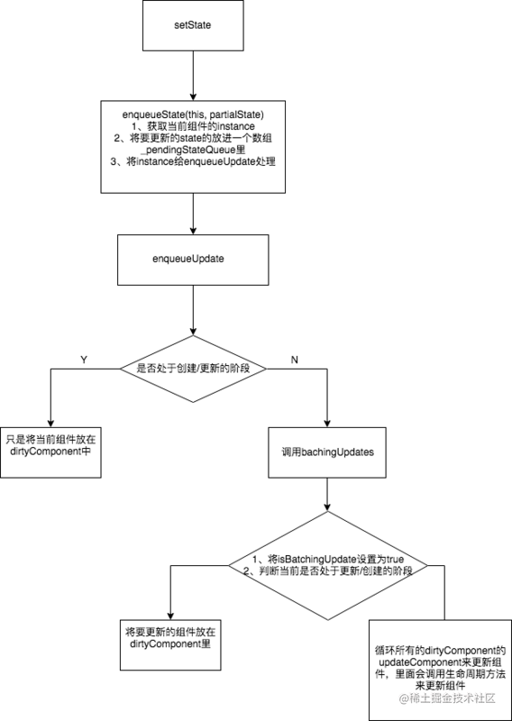

setState被调用之后，更新组件的过程，下面是一个简单的流程图。

下面来逐步的解析图里的流程。
一、setState
ReactBaseClassses.js
ReactComponent.prototype.setState = function (partialState, callback) {
// 将setState事务放进队列中
this.updater.enqueueSetState(this, partialState);
if (callback) {
this.updater.enqueueCallback(this, callback, 'setState');
}
};
这里的partialState可以传object,也可以传function,它会产生新的state以一种Object.assgine()的方式跟旧的state进行合并。
二、enqueueSetState
enqueueSetState: function (publicInstance, partialState) {
// 获取当前组件的instance
var internalInstance = getInternalInstanceReadyForUpdate(publicInstance, 'setState');
// 将要更新的state放入一个数组里
var queue = internalInstance._pendingStateQueue || (internalInstance._pendingStateQueue = []);
queue.push(partialState);
// 将要更新的component instance也放在一个队列里
enqueueUpdate(internalInstance);
}
这段代码可以得知，enqueueSetState 做了两件事：
- 将新的
state放进数组里 - 用
enqueueUpdate来处理将要更新的实例对象
三、enqueueUpdate
ReactUpdates.js
function enqueueUpdate(component) {
// 如果没有处于批量创建/更新组件的阶段，则处理update state事务
if (!batchingStrategy.isBatchingUpdates) {
batchingStrategy.batchedUpdates(enqueueUpdate, component);
return;
}
// 如果正处于批量创建/更新组件的过程，将当前的组件放在dirtyComponents数组中
dirtyComponents.push(component);
}
由这段代码可以看到，当前如果正处于创建/更新组件的过程，就不会立刻去更新组件，而是先把当前的组件放在dirtyComponent里，所以不是每一次的setState都会更新组件~。
这段代码就解释了我们常常听说的：setState是一个异步的过程，它会集齐一批需要更新的组件然后一起更新。
而 batchingStrategy 又是个什么东西呢？
四、batchingStrategy
ReactDefaultBatchingStrategy.js
var ReactDefaultBatchingStrategy = {
// 用于标记当前是否出于批量更新
isBatchingUpdates: false,
// 当调用这个方法时，正式开始批量更新
batchedUpdates: function (callback, a, b, c, d, e) {
var alreadyBatchingUpdates = ReactDefaultBatchingStrategy.isBatchingUpdates;
ReactDefaultBatchingStrategy.isBatchingUpdates = true;
// 如果当前事务正在更新过程在中，则调用callback，既enqueueUpdate
if (alreadyBatchingUpdates) {
return callback(a, b, c, d, e);
} else {
// 否则执行更新事务
return transaction.perform(callback, null, a, b, c, d, e);
}
}
};
这里注意两点：
- 如果当前事务正在更新过程中，则使用
enqueueUpdate将当前组件放在dirtyComponent里。 - 如果当前不在更新过程的话，则执行更新事务。
五、transaction
/**
* <pre>
* wrappers (injected at creation time)
* + +
* | |
* +-----------------|--------|--------------+
* | v | |
* | +---------------+ | |
* | +--| wrapper1 |---|----+ |
* | | +---------------+ v | |
* | | +-------------+ | |
* | | +----| wrapper2 |--------+ |
* | | | +-------------+ | | |
* | | | | | |
* | v v v v | wrapper
* | +---+ +---+ +---------+ +---+ +---+ | invariants
* perform(anyMethod) | | | | | | | | | | | | maintained
* +----------------->|-|---|-|---|-->|anyMethod|---|---|-|---|-|-------->
* | | | | | | | | | | | |
* | | | | | | | | | | | |
* | | | | | | | | | | | |
* | +---+ +---+ +---------+ +---+ +---+ |
* | initialize close |
* +-----------------------------------------+
* </pre>
*/
简单说明一下transaction对象，它暴露了一个perform的方法，用来执行anyMethod，在anyMethod执行的前，需要先执行所有wrapper的initialize方法，在执行完后，要执行所有wrapper的close方法，就辣么简单。
在ReactDefaultBatchingStrategy.js，tranction 的 wrapper有两个 FLUSH_BATCHED_UPDATES, RESET_BATCHED_UPDATES
var RESET_BATCHED_UPDATES = {
initialize: emptyFunction,
close: function () {
ReactDefaultBatchingStrategy.isBatchingUpdates = false;
}
};
var FLUSH_BATCHED_UPDATES = {
initialize: emptyFunction,
close: ReactUpdates.flushBatchedUpdates.bind(ReactUpdates)
};
var TRANSACTION_WRAPPERS = [FLUSH_BATCHED_UPDATES, RESET_BATCHED_UPDATES];
可以看到，这两个wrapper的initialize都没有做什么事情，但是在callback执行完之后，RESET_BATCHED_UPDATES 的作用是将isBatchingUpdates置为false， FLUSH_BATCHED_UPDATES 的作用是执行flushBatchedUpdates，然后里面会循环所有dirtyComponent，调用updateComponent来执行所有的生命周期方法，componentWillReceiveProps， shouldComponentUpdate， componentWillUpdate， render， componentDidUpdate 最后实现组件的更新。以上即为setState的实现过程，最后还是用一个流程图在做一个总结吧~
